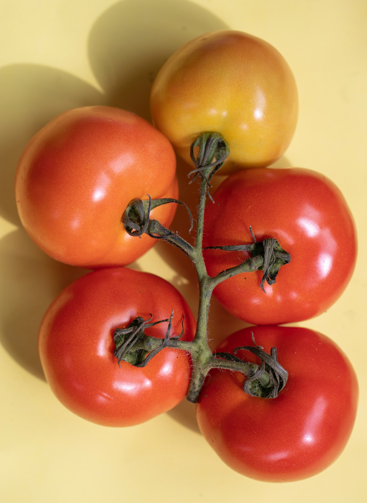
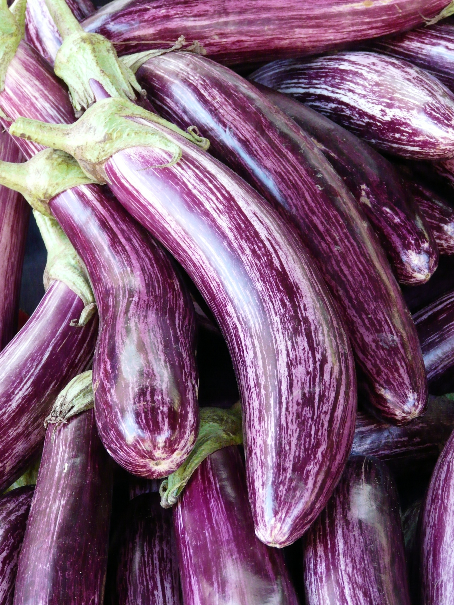
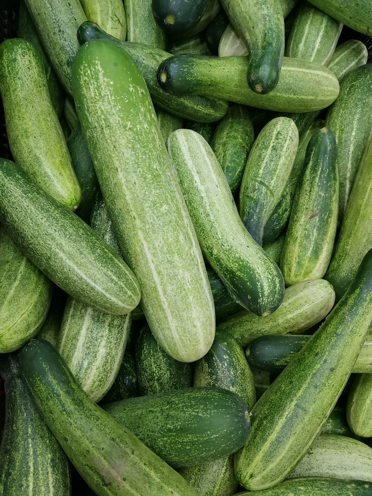

VEGETABLE CORNER

ChILLI
This quintessential ingredient of Indian cuisine is extremely easy to grow. You can procure the seeds for the same from dried red chillies in your kitchen.

SELL ITEM
TOMATO
From a bowl of garden salad to a delectable gravy, tomato is indispensable in almost every cuisine. Here’s how you can easily grow your own tomatoes at home.

SELL ITEM
BRINJAL
Craving for that fragrant baingan ka bharta or a regal plate of kathirikai kulambu? Now you can handpick the brinjals straight from your home garden.

BITTER GOURD
Unpopular opinion – there is nothing that can match up to crisp fried bitter gourd with piping hot rice! And growing the vegetable is also a cakewalk.

SELL ITEM
CUCUMBER
High in potassium and Vitamin K, cucumber is another indispensable element in almost all world cuisines.